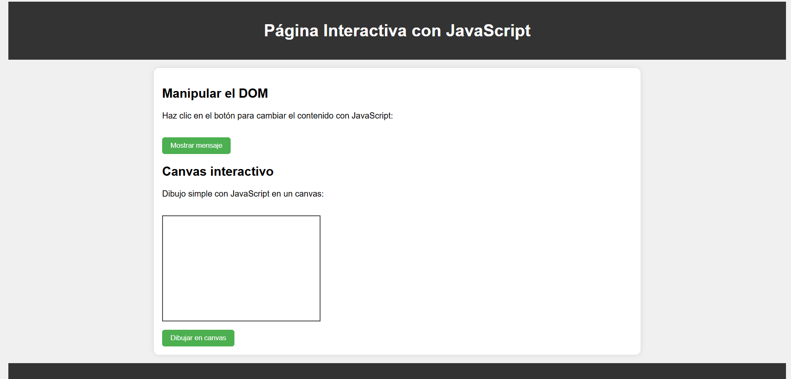

Temas aprendidos: Emmet es una herramienta para escribir código HTML y CSS rápidamente usando abreviaciones
Emmet es un plugin que existe para la mayoría de los editores de texto comunes, pensado para mejorar el flujo de trabajo, la principal funcionalidad de Emmet es que no necesita instalación, este plugin está disponible de forma predeterminada para VS Code y facilita la generación de código HMTL y la apertura de etiquetas.
Ejercicios de laboratorio: Combinaciones como div>header+main+footer, listas con clases, etc.
A continuación, se muestra un ejemplo:.
Escribir el generador emmet para el html semántico con ids del mismo nombre y
conteniendo texto tal como se observa en la siguiente figura. Agrupados en un div
container.
.
El resultado es el siguiente:.
div.container>header#header{header}+nav#nav{nav}+section#section{section>article#article{article}^}+aside#aside{aside}+footer#footer{footer}
Reflexión: Aprendí cómo mejorar mi velocidad al crear estructuras HTML. Usando abreviaciones...
Temas aprendidos: HTML estructura el contenido web mediante etiquetas como h1, p, etc.
HTML, o Hypertext Markup Language, fue introducido por Tim Berners-Lee en 1991 como parte del proyecto World Wide Web (WWW) en el CERN. La versión inicial, HTML 1.0, era simple y destinada a la creación de documentos básicos con hipervínculos. A medida que la web creció, se introdujeron nuevas versiones de HTML con características mejoradas. HTML 2.0 se lanzó en 1995 y HTML 3.2 en 1997. Sin embargo, la evolución más significativa llegó con HTML4 en 1997, que introdujo una mayor capacidad de diseño y estilo. El desarrollo de HTML continuó con XHTML, una versión más estricta y basada en XML, pero luego se volvió a simplificar con HTML5, la versión actual y ampliamente adoptada, trajo consigo mejoras sustanciales en multimedia, gráficos, semántica y accesibilidad, estableciendo la base para la creación de aplicaciones web modernas.
Etiquetas:
Los atributos contienen información adicional sobre el elemento que no aparecerá en el contenido.
Las etiquetas HTML son el lenguaje utilizado para estructurar y definir el contenido en un documento HTML. Cada etiqueta contiene instrucciones sencillas que indican al navegador cómo dar formato al texto y a definir los diversos elementos de la página web, se puede utilizar etiquetas HTML para aplicar cursivas, crear saltos de línea, insertar objetos multimedia, crear listas con viñetas o para definir diferentes tipos de contenido en una página web, como encabezados, párrafos, imágenes, enlaces, formularios y mucho más.
La etiqueta imagen sirve para poner una imagen en el documento HTML, dentro de esta etiqueta también puede tomar una serie de atributos:
El atributo ID: un elemento HTML sólo puede tener un ID que pertenezca a ese único elemento.
El atributo CLASS: varios elementos pueden usar un nombre de clase.
El atributo SRC: es un atributo requerido que especifica la ubicación de la imagen.
El atributo ALT: especifica una descripción de texto de la imagen.
El atributo WIDTH: especifica el ancho de la imagen con la unidad en píxeles.
El atributo HEIGHT: especifica la altura de la imagen con la unidad en píxeles.
Ejercicios de laboratorio: Página básica con etiquetas semánticas, listas, imágenes, vínculos.
Se muestra un ejemplo
Se obtiene el siguiente resultado
Reflexión: Comprendí cómo construir la base de una página web correctamente...
Temas aprendidos: CSS para estilos visuales, uso de Flexbox, Grid Layout, media queries...
CSS, Cascading Style Sheets, Hojas de Estilo en Cascada Es un lenguaje utilizado para la presentación (diseño o aspecto visual) del contenido de una página web. Utilizando CSS daremos estilo a cualquier tag de HTML. Se trata de una tecnología utilizada para dotar de cualidades visuales y estéticas a una página web.
Formas de enlazar CSS:
Hay tres formas principales de enlazar CSS con HTML:
hojas de estilo externas, hojas de estilo internas y estilos en línea. La opción más común es utilizar hojas de estilo externas, donde el código CSS se guarda en un archivo separado y se enlaza a través de la etiqueta dentro del del HTML.
Selectores:
.
Ejercicios de laboratorio: Aplicar estilos para diseño adaptable y visualmente atractivo.
Se muestra un ejemplo
Se obtiene el siguiente resultado
Reflexión: Pude transformar el contenido HTML en interfaces atractivas y funcionales.
Temas aprendidos: Introducción a JavaScript, variables, funciones, control de flujo y DOM.
¿Qué es JavaScript?
Es un lenguaje de programación que se usa para hacer que las páginas web se muevan, cambien, o respondan cuando haces clic, escribes o navegas.
Por ejemplo:
Que aparezca un mensaje cuando haces clic.
Que cambie el color de algo al pasar el mouse.
Que se valide un formulario antes de enviarlo.
¿Para qué sirve?
JavaScript permite:
Hacer sitios interactivos.
Crear juegos en el navegador.
Programar apps móviles o de escritorio.
Crear el backend (parte del servidor) con herramientas como Node.js.
Variables:
Las variables en JavaScript sirven para guardar datos o información que luego podemos usar más adelante. Es como una cajita donde guardas un valor, por ejemplo un nombre, una edad o un número. Puedes crear una variable con palabras como let, const o var. Por ejemplo: let nombre = "Ana"; guarda el texto "Ana" en una variable llamada nombre. Luego puedes usar nombre para mostrarlo en pantalla o hacer algo con él. Si usas const, la variable no puede cambiar, y si usas let, sí puede cambiar más adelante.
Funciones:
Las funciones en JavaScript son bloques de código que hacen una tarea específica cuando tú las llamas. Es como una receta: la defines una vez y luego la usas todas las veces que quieras. Por ejemplo, puedes tener una función llamada saludar que muestra un mensaje. La defines así: function saludar() { alert("Hola"); } y luego la usas simplemente escribiendo saludar();. Las funciones te ayudan a organizar tu código, evitar repeticiones y hacerlo más claro.
Ejercicios de laboratorio: Crear interacciones con JS, manipular elementos, usar canvas.
Se muestra un ejemplo
Se obtiene el siguiente resultado

Reflexión: Aprendí a darle vida a las páginas web con lógica y eventos dinámicos.
Temas aprendidos: React, JSX, props, componentes funcionales y estructura del Front-End moderno.
¿Qué es react?
React es una biblioteca de JavaScript para construir interfaces de usuario. Fue creada por Facebook y está basada en una arquitectura componente-céntrica, donde cada parte de la interfaz (como un botón, un formulario, o una lista) se convierte en un componente reutilizable. React utiliza un sistema eficiente de actualización llamado Virtual DOM, lo que hace que las aplicaciones sean rápidas y escalables.
Características
Componentes: Las interfaces de usuario se dividen en pequeños componentes reutilizables que facilitan la gestión y el mantenimiento del código.
Virtual DOM: React utiliza un DOM virtual para mejorar el rendimiento al actualizar solo las partes necesarias de la interfaz de usuario.
Unidireccionalidad de Datos: React sigue el principio de unidireccionalidad de datos, lo que significa que el flujo de datos sigue una única dirección, facilitando el mantenimiento del estado de la aplicación.
JSX: Sintaxis de extensión de JavaScript que permite escribir código HTML dentro de archivos JavaScript, facilitando la construcción de interfaces de usuario de manera declarativa.
React Hooks: Introducidos en React 16.8, los hooks son funciones que permiten utilizar el estado y otras características de React en componentes de función.
Herramientas de instalación con React
Las principales herramientas en el ecosistema de React incluyen:
Create-react-app
Vite
Remix Run
NextJS
GatsbyJS
BlitzJS
Hydrogen
Extensiones para trabajar con react:
Live server
Auto Rename Tag
ES7 + React/Redux/React-Native
Material Theme Icons
React Hooks Snippets
Simple React Snippets
Tailwind CSS Intellisense
Reflexión: Comprendí cómo dividir interfaces en componentes reutilizables y eficientes.